Nossa História 💖
Uma jornada louca do destino
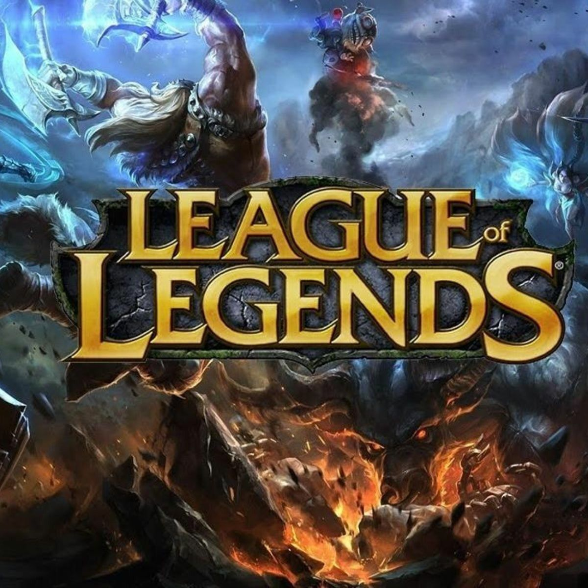
Nos conhecemos
Nós nos conhecemos jogando Lol, e você foi no meu aniversario de 15 anos kkkkk. (Não tenho foto daquele dia). Tivemos uma amizade bem legal, a gente sempre conversava sobre os "contatinhos" e as decepções amorosas um do outro. E se zoando muito hahaha 💖. Com o passar do tempo fomos nos aproximando...
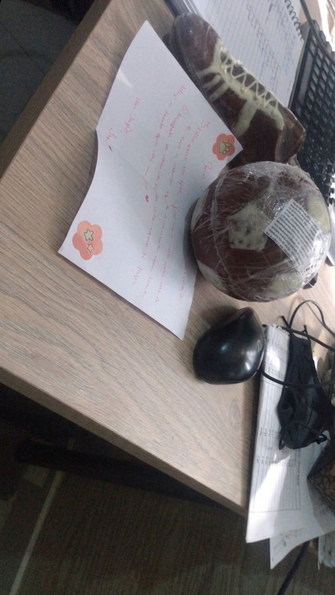
O primeiro presente
Fomos nos aproximando tanto, que nossa conexão foi crescendo... e um dia, sem motivo algum você me deu um presente, chocolate de Campos uma bola de futebol e uma chuteira hahaha. Fiquei tão feliz, foi a primeira vez que eu realmente me senti especial para alguém, que eu fui escolhido por alguem... Passamos por conflitos entre amizades para podermos estar juntos, eu não me arrependo de nada... 💖

Primeiro "Eu Te Amo"
Lembro que no dia seguinte do presente, estavamos assistindo Fronze 2 em call no discord, quando você disse "Eu te amo" pela primeira vez... Foi ali que tudo mudou na minha vida, aonde eu me senti seguro. 💖
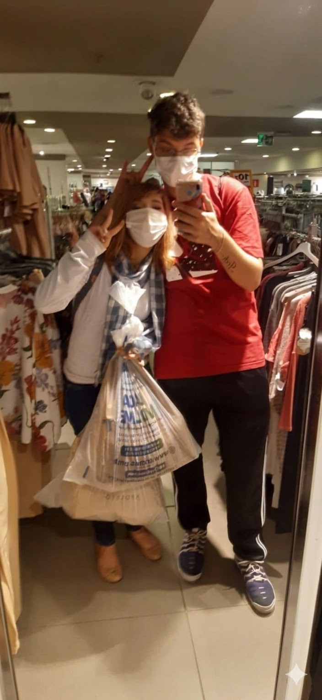
Primeiro Encontro / Primeiro Beijo
O dia em que tudo começou nosso primeiro encontro, ali descobrimos que tinhamos uma conexão incrivel, a gente se divertiu tanto, andou para la e para ca hahaha. Derrubei coca cola em mim mesmo, tive a tentativa falha de ir até o trimais te dar um beijo e você me deu o franklin. Chegou o momento do primeiro beijo, aonde eu me senti tão nervoso e com medo, parecia que era a minha primeira vez hahahah, ficou para a historia kkkkk 💖
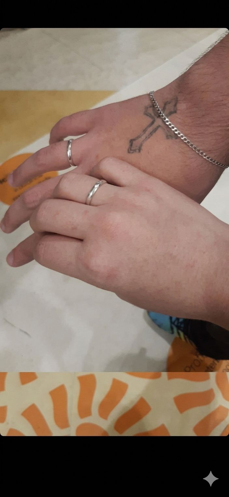
Dia do pedido
Lembro que ainda tivemos muitos outros roles, aleatorios, cinemas, etc. Você foi até tirar meu RG e a CNH comigo hahaha. Mas infelizmente um dia sua tia chegou a falecer na pandemia, e fomos para a missa de 7 dia, o padre brincou com a gente sobre a aliança, e criei coragem para te pedir em namoro. Quando estavamos no seu quarto, perto do horario de eu ir embora, você emcima de mim eu fiz o pedido e você falou "SIM" kkkkk, eu estava com tanto medo de tomar um fora, jamais me imaginei nessa situação ahahha. 💖
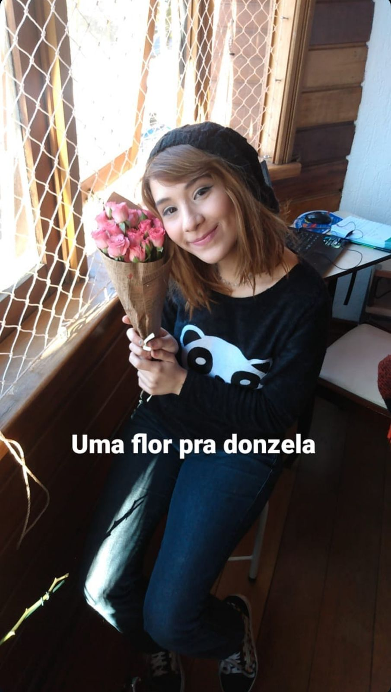
Primeira Viagem Juntos
Lembro que você ia para Campos do Jordão visitar sua mãe que estava doente. Você comentou comigo que passava mal em serra, então me ajeitei e fui contigo para te ajudar, e foi bem legal, conheci uma cidade nova e passamos o nosso primeiro momento de intimidades juntos. Eu adorava ir para Campos. 💖
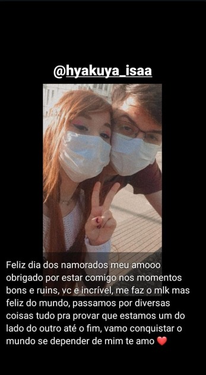
Primeiro dia dos Namorados
Nosso primeiro dia dos namorados, não foi do jeito que a gente queria. A gente planejou tanta coisa, mas você acabou pegando covid-19 e ficamos o dia inteiro em chamada de video pelo whatsapp. A gente deu nosso jeitinho como sempre. 💖
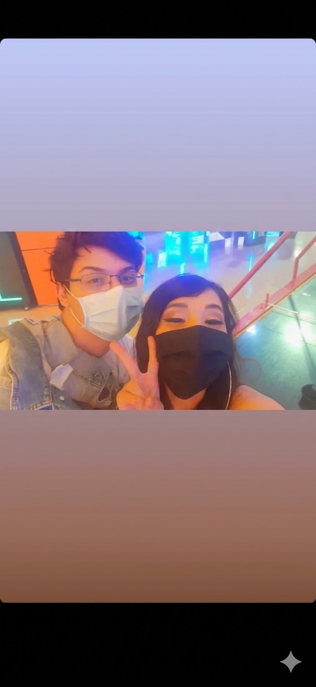
1 ano juntos
Com muito amor e aprendizados, completamos 1 ano juntos, e foi um dia tão especial, a gente saiu e se divertiu bastante, até passei mal no barco viking ahhahaha. 💖
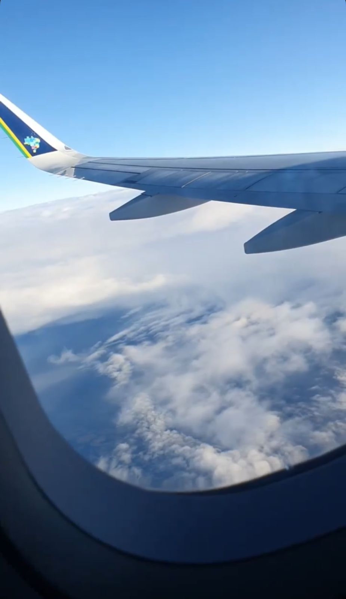
Tempo separados
No dia 10 de junho de 2022, brigamos feio, eu estava com ansiedade e acorreu muitas coisas ruins comigo, e acabei descontando em você. Você só queria um dia tranquila, mas eu não queria te escutar. E você decidiu se afastar por um periodo...
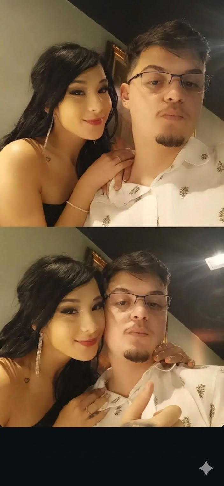
A volta
Logo após 3 meses que você sumiu, derrepente você me manda uma mensagem no celular, passamos noite e dia conversando durante uma semana. E decidimos que no sabado iriamos sair, para um cinema, no dia 13 de agosto de 2022. E logo após irmos ao cinema, fomos para o motel, ali decidimos reatar nosso relacionamento. Mas...
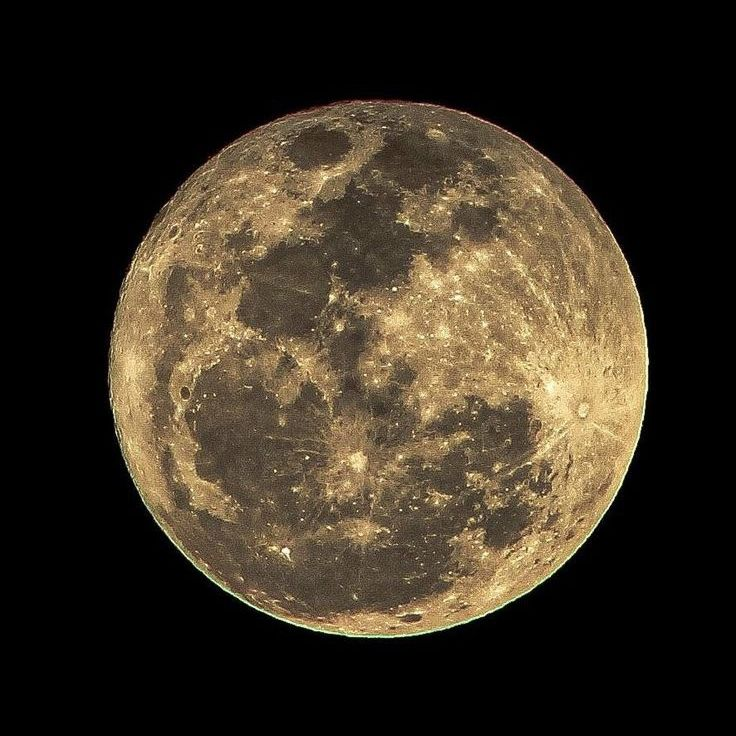
Final de tudo...
Quando voltamos, vivemos muitas coisas ainda, fomos varias vezes para campos, cinemas, moteis, restaurantes, sitios, etc. Mas infelizmente, alem de uma rotina aonde não tinhamos privacidade, você não se sentia mais segura e com razão, e decidiu terminar comigo. Eu fui um babaca desde que tinhamos voltado, eu estava te tratando mal, estava com medo de ser "Abandonado" de novo, e nunca procurei ajuda para tratar meu traumas e minha ansiedade. Eu buscava aprovação de todo mundo ao meu redor, por medo do que iriam pensar. Eu nunca tive controle da minha vida, nunca tive controle dos meus pensamentos e acabei te perdendo... Foram 3 longos anos, aonde eu nunca te superei, mas aprendi sobre a minha vida, procurei ajuda, procurei a melhorar, vivi diversos momentos legais na minha vida, mas sempre senti que faltava você la. Me envolvi com outras pessoas, assim como você também. Mas por um acaso do destino...
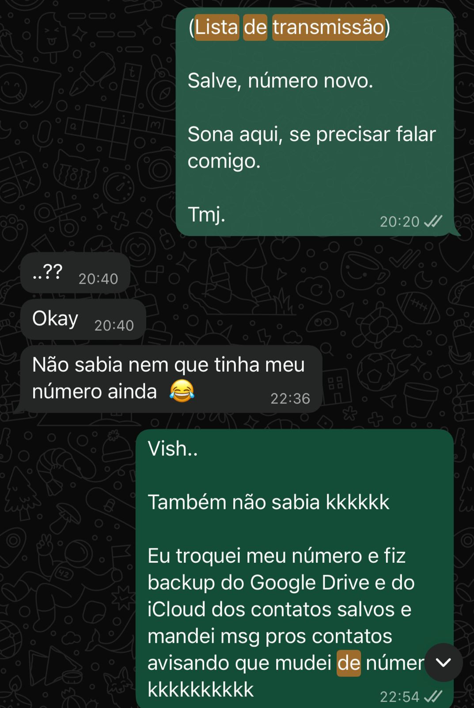
Acaso do destino
Depois de 3 anos, eu decidi alterar o número do meu celular, e para não perder meus contatos salvei todos na conta do google, mas eu não tinha o seu número salvo. E criei um robozinho com IA para mandar um script para os contato avisando que sou eu, para salvar o número. Eu estava na academia treinando quando derrepente, meu celular apita e aparece uma mensagem sua. Meu coração disparou na hora, eu não sabia se eu ficava feliz ou preocupado haha. Eu ia ignorar e fingir que nada aconteceu até porque eu sabia que você estava com outra pessoa, mas você mandou outra mensagem depois de algumas horas, e eu respondi, desde lá não tinhamos mais parado de conversar e ressignificamos muitas coisas.
Tabacaria
Até que depois de uma semana você terminou seu relacionamento, e te convidei para distrair a cabeça, tomar alguma coisa e conversar sobre a vida sobre esse tempo todo que passou. A gente riu, matou a saudade um do outro, e no dia seguinte, você comentou que queria uma hidromassagem, e eu falei que eu conhecia um lugar que dava pra usar a hidromassagem, na brincadeira. E você acabou aceitando. Tentamos os dois se controlar e manter o respeito, mas acabou acontecendo, aonde a gente se beijou e acabou transando. Depois desse dia não tinhamos nos separados mais. Decidimos tentar novamente.
Intensidade
Vivemos em uma intensidade enorme esses 4 meses, foram 4 meses aonde matamos a saudade, aproveitamos momentos que nunca tivemos antigamente. Hoje podiamos comprar coisas para dar de presente, podiamos sair, podiamos pedir comida no delivery, podiamos ter momentos de intimidades e momentos só nossos. Nesses 4 meses, tivemos uma convivencia muito boa e tivemos acima de tudo um companheirismo muito forte, vivemos coisas que nunca conseguiamos viver no passado. Sinceramente, eu não me arrependo de nada e só agradeço a deus por ter conseguido viver esses momentos contigo, nem que sejá por um curto periodo. Eu agradeço demais, claro que eu queria viver muito mais coisas contigo. Mas esse destino é doido, e a gente não sabe o que ele pode estar nos reservando.
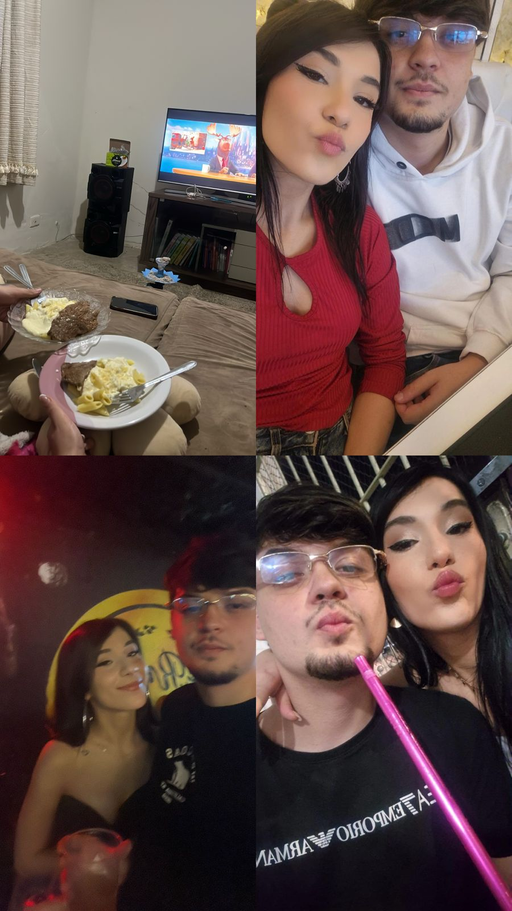
...
Vivemos tão intensamente, que ignoramos muitos gatilhos, você sacrificou varios gatilhos e sentimentos para estar comigo, assim como eu sacrifiquei muitos para tentar fazer dar certo. Fomos muito rapido, você terminou um relacionamento recente, e eu ignorava oq me fazia mal para tentar fazer com que as coisas funcionassem. Não tivemos calma, talvez isso possa ser um aprendizado para a gente no futuro juntos, ou até mesmo separados. Não sabemos o que vai acontecer no futuro. Mas eu ainda torço para que sejá você.